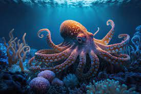

SEA ANIMALS
Dolphin
Dolphins are highly intelligent marine mammals and are part of the family of toothed whales that includes orcas and pilot whales. They are found
worldwide, mostly in shallow seas of the continental shelves, and are carnivores, mostly eating fish and squid.
Star fish
 Starfish are marine invertebrates.
They typically have a central disc and usually five arms, though some species have a larger number of arms. The
aboral or upper surface may be smooth, granular or spiny, and is covered with overlapping plates.
Starfish are marine invertebrates.
They typically have a central disc and usually five arms, though some species have a larger number of arms. The
aboral or upper surface may be smooth, granular or spiny, and is covered with overlapping plates.
Octopus

Octopuses are solitary creatures excellent at camouflaging and concealing themselves. They are about 90 percent muscle, and because they lack
bones, they can fit through very small spaces. Their skin contains cells called chromatophores that allow the
octopus to change color and pattern.
Go to Home Page